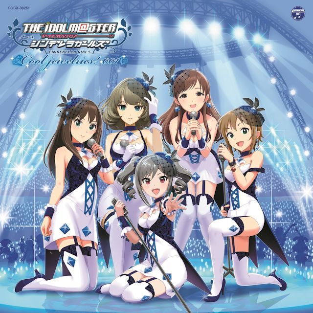
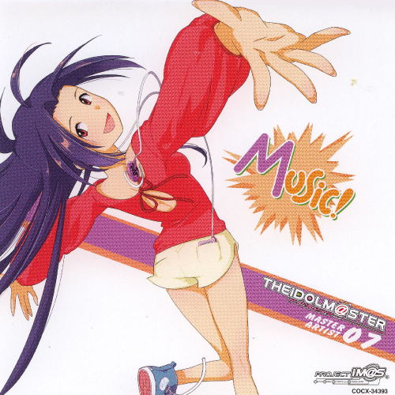

Accel
匠心打造的高端耳机
Product
Story
Try
Accel + THE IDOLM@STER
イリュージョニスタ!
这首充满活力的歌曲展现了偶像们的魅力与幻象。Accel 耳机完美重现了歌曲中细腻的人声层次和丰富的乐器编排，让每个音符都清晰可闻。特别是副歌部分的和声处理，通过 Accel 的宽阔音场得到了完美诠释。

Nation Blue
一首富有爱国情怀的强力摇滚歌曲，展现了深度和力量。Accel 耳机的优秀低频响应完美呈现了鼓声的冲击力，而清晰的中高频则让吉他的旋律线条分明。这首歌证明了 Accel 在处理重型音乐时的卓越表现。
Mythmaker
神话般的史诗级作品，充满了层次丰富的编曲和宏大的音景。Accel 耳机的精确成像能力让每个乐器都有自己的空间位置，从细腻的弦乐到宏大的合唱团，每个细节都得到了完美还原。这是测试耳机解析力的绝佳曲目。

隣に…
一首温柔感人的慢歌，讲述着陪伴与守护的故事。Accel 耳机温暖自然的音色特质让人声显得格外亲近，仿佛歌者就在身边轻声诉说。钢琴伴奏的每个音符都透着晶莹剔透的质感，展现了 Accel 在处理抒情音乐时的细腻表现。
Yes! Party Time!!
充满节庆氛围的欢快歌曲，带来无尽的正能量和活力。Accel 耳机出色的动态表现让每个节拍都充满弹性，丰富的配器在宽阔的音场中各就各位。无论是电子合成器的闪亮音色还是现场观众的欢呼声，都被 Accel 完美捕捉并呈现。